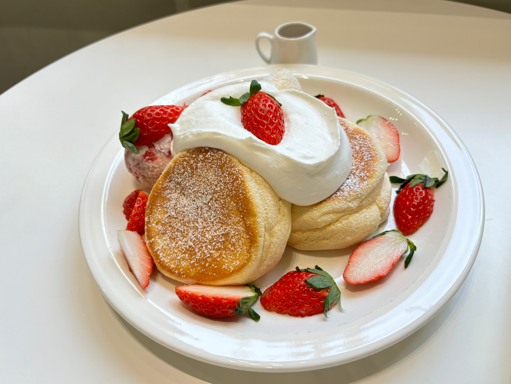

Pancakes
>

Description
Fluffy, golden pancakes that are crispy on the outside and soft on the insede. Perfect for a slow morning with maple syrup, butter, and your favorite fruits.
ingredients
- 1 1/2 cups all-purpose flour
- 3 1/2 teasspoons baking powder
- 1 tablespoon sugar
- 1/2 teaspoon salt
- 1 1/4 cups milk
- 1 egg
- 3 tablespoons butter, melted
Steps
- In a lrge bowl, mix the flour, baking powder, sugar, and salt
- Add milk, egg, and the melted butter. Stir until just combined - a few lumps are fine
- Heat a lightly oiled pan over medium heat
- Pour 1/4 cup of butter for each pancake and cook umtil bubbles form on the surface, about 2 minutes
- Flip and cook the onther side until golden, about 1 minute more
- Serve hot with maple syrup, butter, and fruits.
Home